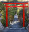
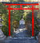

Kyoto: the old capital of Japan. With a modern heart built on ancient foundations, temples scattered throughout the city,
and a surprise on every corner.

Kyoto: the old capital of Japan. With a modern heart built on ancient foundations, temples scattered throughout the city,
and a surprise on every corner.


Its shiny and clean. Japan reflects everything. Here's the best of the modern images.
Nagoya station and Oasis 21.

Urban scenery from around the country


Modern mixes with ancient in Kyoto


More street scenes


Hiroshima's modernity contrasts with its past.


Nagoya Tower and Oasis 21. Water in the sky


Shizuoka is yet another modern masterpiece.
And of course Tokyo...
Industry - Japan has plenty. See it all from the train.
But obey the little cartoon men or bad things will happen.
There's a little poverty in places.

And a possible subliminal message in the advertising on the subway...